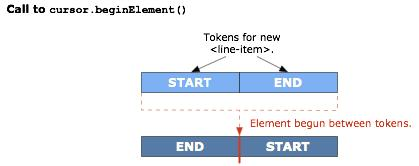

Tutorial: First Steps with XMLBeans |  |
This tutorial introduces XMLBeans basics. Through it, you'll get a hands on view of two of the three technologies that make up version 1 of XMLBeans: strongly-typed access to XML through compiled schema and type-agnostic access to XML through the XML cursor. This tutorial describes what XMLBeans is and introduces a few of the tools that come with an XMLBeans installation.
To get started, you'll need the following:
- JDK 1.4 for version 1 XMLBeans releases. You can download the JDK here.
- An XMLBeans version 1 installation. If you don't have this yet, you'll find installation instructions at Installing XMLBeans.
- An environment set up according to what's described in Installing XMLBeans.
- An editor for writing Java code. This could be a text editor or your favorite Java IDE.
You'll create a few files as part of this tutorial. Start out by creating a new tutorials directory just under your XMLBEANS_HOME directory. This will hold the files you create in the course of this tutorial. While you're at it, create the following subdirectories under the tutorials directory: classes, instances, src, lib. If you're working with XMLBeans version 1.0.3, your hierarchy should look something like this:
xmlbeans-1.0.3
...
tutorials
gettingstarted
classes
instances
lib
src
Get Acquainted with the Basics
XMLBeans version 1 includes multiple related technologies for handling XML. In a nutshell, XMLBeans offers three complementary technologies:
- A schema-oriented way to view XML instances through Java types based on the schema.
- A schema-agnostic way to traverse the full XML infoset.
- A schema object model through which, in Java code, you can examine a compiled XML schema. (Note: this aspect of XMLBeans is not covered in this tutorial. For more information, see Introduction to the Schema Type System.
There's much more, but that's a start. Each of these three pieces is useful for different goals, and you may find yourself writing code that uses all three in the same application. The rest of this tutorial will introduce you to these technologies.
Getting Started with Handling XML Through Schema
One of the things XMLBeans does best is provide a way for you to handle XML by using a schema to which the XML conforms. With XMLBeans you can compile one or more schema (XSD) files to generate Java types. By binding XML instance documents to these Java types, you provide yourself a way to access the instances in Java in a schema-oriented way.
Try this now with XML you got when you installed XMLBeans. To start out, open a command prompt and cd to the directory containing your XMLBeans installation. If you installed version 1.0.3 to your root directory, you'd do this on Windows:
cd \xmlbeans-1.0.3
If you followed the installation instructions at Installing XMLBeans, you should be able to execute the scripts you got in the \bin directory. Use one of these now — xpretty — to take a look at easypo schema contained in easypo.xsd, like so (if you're using a UNIX OS this script isn't available, so you'll need to open the file in an editor):
xpretty schemas\easypo\easypo.xsd
After the copyright text, you should see the following:
<xs:schema
xmlns:xs="http://www.w3.org/2001/XMLSchema"
xmlns:po="http://openuri.org/easypo"
targetNamespace="http://openuri.org/easypo"
elementFormDefault="qualified">
<xs:element name="purchase-order">
<xs:complexType>
<xs:sequence>
<xs:element name="customer" type="po:customer"/>
<xs:element name="date" type="xs:dateTime"/>
<xs:element name="line-item" type="po:line-item" minOccurs="0" maxOccurs="unbounded"/>
<xs:element name="shipper" type="po:shipper" minOccurs="0" maxOccurs="1"/>
</xs:sequence>
</xs:complexType>
</xs:element>
<xs:complexType name="customer">
<xs:sequence>
<xs:element name="name" type="xs:string"/>
<xs:element name="address" type="xs:string"/>
</xs:sequence>
<xs:attribute name="age" type="xs:int"/>
<xs:attribute name="moo" type="xs:int" default="100"/>
<xs:attribute name="poo" type="xs:int" fixed="200"/>
</xs:complexType>
<xs:complexType name="line-item">
<xs:sequence>
<xs:element name="description" type="xs:string"/>
<xs:element name="per-unit-ounces" type="xs:decimal"/>
<xs:element name="price" type="xs:decimal"/>
<xs:element name="quantity" type="xs:integer"/>
</xs:sequence>
</xs:complexType>
<xs:complexType name="shipper">
<xs:sequence>
<xs:element name="name" type="xs:string"/>
<xs:element name="per-ounce-rate" type="xs:decimal"/>
</xs:sequence>
</xs:complexType>
</xs:schema>
If you don't know anything about schema, here are a few basics for this one:
- This schema is a blueprint, defining the rules for creating a certain "shape" of XML for purchase orders.
- The purchase order XML defined here would have a <purchase-order> element that has four immediate children: <customer>, <date>, <line-item>, and <shipper> — in that sequence.
- Three of the four child elements have their own children in a particular structure, as defined in the schema's respective <complexType> elements.
Now take a look at an XML document based on this schema. Copy the following XML from this page into a new XML file called easypo.xml, then put the file in the tutorials\gettingstarted\instances directory you created at the beginning of this tutorial.
<purchase-order xmlns="http://openuri.org/easypo">
<customer>
<name>Gladys Kravitz</name>
<address>Anytown, PA</address>
</customer>
<date>2003-01-07T14:16:00-05:00</date>
<line-item>
<description>Burnham's Celestial Handbook, Vol 1</description>
<per-unit-ounces>5</per-unit-ounces>
<price>21.79</price>
<quantity>2</quantity>
</line-item>
<line-item>
<description>Burnham's Celestial Handbook, Vol 2</description>
<per-unit-ounces>5</per-unit-ounces>
<price>19.89</price>
<quantity>2</quantity>
</line-item>
<shipper>
<name>ZipShip</name>
<per-ounce-rate>0.74</per-ounce-rate>
</shipper>
</purchase-order>
This XML represents a purchase order in through which Gladys, an amateur astronomer, is buying two books to use as references in her stargazing (along with an extra copy of each for her niece). Because this XML is an instance of the schema, you'll recognize the <purchase-order> element and its children, <customer>, <date>, <line-item>, and <shipper>.
Now to try these examples out with XMLBeans. Among the tools included with XMLBeans is scomp, a script that executes the schema compiler (part of the XMLBeans API) to compile a schema or directory of schemas. Use scomp to compile the easypo schema. On Windows, use the following command (this script is also available on UNIX):
scomp -out tutorials\gettingstarted\lib\easypo.jar schemas\easypo\easypo.xsd
You'll end up with easypo.jar in the lib directory of your tutorial hierarchy.
Results of Compiling the Schema
[This section describes the interfaces generated by the schema compiler. If you're familiar with this want to skip to writing Java code, go to Writing Code that Uses Generated Types.]
The schema compiler's output is designed not only to provide a JavaBeans-oriented view of your schema, but to anticipate the shortcuts you're likely to want. If you compare the contents of easypo.xsd with the Java types generated by compiling it, you'll see obvious parallels. For each of the elements and schema types defined in the schema, the schema compiler has generated Java types. The package name corresponds to the schema's namespace URI.
For example, take another look at the <purchase-order> element defined in the schema:
<xs:element name="purchase-order">
<xs:complexType>
<xs:sequence>
<xs:element name="customer" type="po:customer"/>
<xs:element name="date" type="xs:dateTime"/>
<xs:element name="line-item" type="po:line-item" minOccurs="0" maxOccurs="unbounded"/>
<xs:element name="shipper" type="po:shipper" minOccurs="0" maxOccurs="1"/>
</xs:sequence>
</xs:complexType>
</xs:element>
This snippet defines the <purchase-order> element as having a "local" complex type (also known as an "anonymous" complex type). This type includes a sequence of child elements (in the schema world, <sequence> is a "compositor" and each <element> is a "particle"). The <date> element is specified as an xs:dateTime, a built-in type defined by the W3C's schema data type specification; the other three elements are complex types defined elsewhere in this schema.
Options for Accessing Elements of Built-In Schema Types
To represent the <purchase-order> element, the schema compiler has generated a PurchaseOrder interface that extends java.lang.Object and org.apache.xmlbeans.XmlObject . However, you'll find that this interface is actually contained within a PurchaseOrderDocument interface. XMLBeans does this for "global" element and attributes — those defined at the top level of the schema. This is to provide you with a way to get and set the global item as a whole piece, which would be difficult to do if it weren't contained by anything. In other words, you need a type on which to methods such as getPurchaseOrder and setPurchaseOrder and this "Document" interface fills that role.
For each of <purchase-order>'s four child elements, the PurchaseOrder interface exposes accessors according to JavaBeans conventions. For example, for the <date> element you have the following:
public abstract java.util.Calendar getDate() public abstract void setDate ( java.util.Calendar )
This is one of two ways that the schema compiler provides for access to the <date> element — a more convenient, Java-native way, one might say. These accessors are a kind of convenience pair (you're likely to want a Calendar instance when working with a date). However, because the <date> element's type, xs:dateTime, is a built-in schema type, the schema compiler provides accessors that get and set its value with another Java type that XMLBeans defines:
public abstract org.apache.xmlbeans.XmlDateTime xgetDate() public abstract void xsetDate( org.apache.xmlbeans.XmlDateTime )
XmlDateTime can be seen as a Rosetta Stone. With it, you can get and set the element's value using java.util.Calendar , java.util.Date , and org.apache.xmlbeans.GDate . (For a full list of how built-in schema types are mapped to Java types by the compiler, see XMLBeans Support for Built-In Schema Types.)
Access for Elements of User-Defined Schema Types
For the three elements whose types are defined within the schema, the compiler generates separate Java types and uses these in accessors — as below for the <customer> element's customer type.
public abstract org.openuri.easypo.Customer getCustomer() public abstract void setCustomer( org.openuri.easypo.Customer )
In other words you can call getCustomer to retrieve its Customer instance, then update the instance's contents — which is how you update the content of the <customer> element it represents.
Along the same lines, you get a convenience method for complex types like customer, like so:
public abstract org.openuri.easypo.Customer addNewCustomer()
Through an add* method such as this one, you can add a new <customer> element to the <purchase-order> element. The method returns a Customer instance so that you can update the new element's contents.
Other convenience methods are provided for elements and attributes that schema defines as optional. The <shipper> element is optional because the schema specifies its minOccurs attribute value as 0 (the default value for this attribute is 1). As a result, the element need not exist in the XML in order for the instance to be valid. To find out if it's there and to remove it if it is, you get these methods:
public boolean isSetShipper ( ) public abstract void unsetShipper ( )
Arrays for Accessing Elements That May Occur More Than Once
Another optional element defined by the schema is <line-item>. However, there's an important difference for <line-item> — its maxOccurs attribute's value is "unbounded," meaning it may occur multiple times as a child of <purchase-order> (like minOccurs, the default of maxOccurs is 1). A common Java way to handle multiple instances of the same type is through an array of that type — and that's exactly what the schema compiler gives you:
// Get or set the whole array. public abstract org.openuri.easypo.LineItem[] getLineItemArray ( ) public abstract void setLineItemArray ( org.openuri.easypo.LineItem[] ) // Get or set a single item. public abstract org.openuri.easypo.LineItem getLineItemArray ( int ) public abstract void setLineItemArray( int, org.openuri.easypo.LineItem ) // Add or remove an item. public abstract org.openuri.easypo.LineItem insertNewLineItem( int ) public abstract void removeLineItem( int ) // Get the array's size (without having to get the array, then call .length). public abstract int sizeOfLineItemArray()
Finally, you'll notice that the schema compiler has generated a field:
public static final org.apache.xmlbeans.SchemaType type
You can use this field for access to a SchemaType instance that represents the underlying schema type itself. This will be covered in the last part of this tutorial.
Writing Code that Uses Generated Types
You're going to write a bit of code to add a new line item to the purchase order. It turns out that Gladys wants to add another book to her order. Your code will accept the existing order along with raw data for the new item, then add the item and return the updated XML.
Start out by creating a POUpdater.java file in the tutorials\gettingstarted\src directory. Add the following code to that file:
import java.io.*;
import java.math.*;
import org.apache.xmlbeans.*;
import org.apache.easypo.*;
public class POUpdater
{
private static String addLineItem(File purchaseOrder, String itemDescription,
String perUnitOuncesString,
String itemPriceString, String itemQuantityString)
{
// Bind the incoming XML to an XMLBeans type.
PurchaseOrderDocument poDoc = null;
try
{
poDoc = PurchaseOrderDocument.Factory.parse(purchaseOrder);
} catch (XmlException e)
{
e.printStackTrace();
} catch (IOException e)
{
e.printStackTrace();
}
return poDoc.toString();
}
}
So far, the addLineItem method binds the incoming XML to an XMLBeans type generated by compiling the schema. This snippet creates a method that receives a File instance representing the purchase order XML, as well as strings containing the raw data that will comprise the new item added. You bind the XML document — the root element and its children — to the PurchaseOrderDocument interface. This interface, like all types extending XmlObject (including all types generated from schema), provides a Factory class with which to create new instances. The Factory class provides various versions of the parse method, each receiving XML source as a different Java type.
The method's next bit of code, show below, converts the incoming raw data into types that can be used when creating the new <line-item> element. It then adds the new element and sets that element's children's values. Remember that, in XMLBeans, you get at the type representing a global element by going through the "Document" type that contains it — here, with the getPurchaseOrder method.
BigDecimal perUnitOunces = new BigDecimal(perUnitOuncesString); BigDecimal itemPrice = new BigDecimal(itemPriceString); BigInteger itemQuantity = new BigInteger(itemQuantityString); LineItem newItem = poDoc.getPurchaseOrder().addNewLineItem(); newItem.setDescription(itemDescription); newItem.setPerUnitOunces(perUnitOunces); newItem.setPrice(itemPrice); newItem.setQuantity(itemQuantity);
That's pretty much all there is to it. The JavaBeans-style access provided by compiling your schema greatly simplifies your access to XML instances based on the schema.
Here's a full version of the POUpdater class, with the addLineItem method accessible via a main method.
import java.io.*;
import java.math.*;
import org.apache.xmlbeans.*;
import org.apache.easypo.*;
public class POUpdater
{
public static void main(String[] args)
{
File poXmlFile = new File(args[0]);
String updatedPoXml = addLineItem(poXmlFile, args[1], args[2],
args[3], args[4]);
System.out.println(updatedPoXml);
}
private static String addLineItem(File purchaseOrder, String itemDescription,
String perUnitOuncesString,
String itemPriceString, String itemQuantityString)
{
PurchaseOrderDocument poDoc = null;
try
{
// Bind the incoming XML to an XMLBeans type.
poDoc = PurchaseOrderDocument.Factory.parse(purchaseOrder);
} catch (XmlException e)
{
e.printStackTrace();
} catch (IOException e)
{
e.printStackTrace();
}
// Convert incoming data to types that can be used in accessors.
BigDecimal perUnitOunces = new BigDecimal(perUnitOuncesString);
BigDecimal itemPrice = new BigDecimal(itemPriceString);
BigInteger itemQuantity = new BigInteger(itemQuantityString);
// Add the new <line-item> element.
LineItem newItem = poDoc.getPurchaseOrder().addNewLineItem();
newItem.setDescription(itemDescription);
newItem.setPerUnitOunces(perUnitOunces);
newItem.setPrice(itemPrice);
newItem.setQuantity(itemQuantity);
return poDoc.toString();
}
}
Now, compile the new class with a command such as the following (the line is broken for readability):
javac -classpath %XMLBEANS_HOME%\lib\xbean.jar;tutorials\gettingstarted\lib\easypo.jar
-d tutorials\gettingstarted\classes tutorials\gettingstarted\src\POUpdater.java
After you compile, you can try out the class with the following command (again, broken for readability):
java -cp tutorials\gettingstarted\classes;%XMLBEANS_HOME%\lib\xbean.jar;tutorials\gettingstarted\lib\easypo.jar
POUpdater tutorials\gettingstarted\instances\easypo.xml "a new item" 5.0 20.00 6
The output should look like the instance output above, but with the following added as the last <line-item> element, immediately before the <shipper> element.
<line-item>
<description>Backyard Astronomer's Guide, The</description>
<per-unit-ounces>5.0</per-unit-ounces>
<price>49.95</price>
<quantity>2</quantity>
</line-item>
Obviously, you need a schema to use this aspect of XMLBeans. But you may find yourself creating a schema where you only have instances so that you can compile it to generate those Java types — just to make your life a little easier.
Getting Started with the XML Cursor
The XML cursor — represented in the API by the org.apache.xmlbeans.XmlCursor interface — is designed to (among other things) complement the JavaBeans-style access you get from types generated by compiling schema. The cursor provides the ability to move over the XML in a more fine-grained manner. For example, in the preceding code you added a new <line-item> element, but you had no control over where the new element went. XMLBeans just inserted it as the last <line-item>. The simplicity provided by get/set pairs is clearly an advantage with the Java types you get from schema, but when you care about finer control — such as element order — then turn to XmlCursor.
You might say that XmlCursor provides a schema-agnostic view of the XML. From a cursor's perspective, the XML is a series of tokens. These tokens are divided into categories called token types represented by constants of org.apache.xmlbeans.XmlCursor.TokenType . Token types include START (for the beginning of an element), END (for its end), ATTR (for an attribute), and TEXT (for an element's text content). With a cursor, you navigate through XML by moving the cursor from token to token.
Adding a New <line-item> Element, Cursor-Style
In this section you'll insert the same new <line-item> element, but with care this time to ensure that it's in the right place in the list, alphabetically. For simplicity's sake, assume that the <line-item> elements in the document you receive are already in alphabetical order (which, it so happens, they are). You just need to make sure the addition follows suit.
Create a new method called addLineItemWithCursor. You'll use this as an alternative to the previous method. As in the addLineItem method, you'll need to parse the incoming XML into the types you generated, so your new method should start out looking like this:
private static String addLineItemWithCursor(File purchaseOrder, String itemDescription,
String perUnitOunces, String itemPrice, String itemQuantity)
{
PurchaseOrderDocument poDoc = null;
try
{
poDoc = PurchaseOrderDocument.Factory.parse(purchaseOrder);
} catch (XmlException e)
{
e.printStackTrace();
} catch (IOException e)
{
e.printStackTrace();
}
PurchaseOrderDocument.PurchaseOrder po = poDoc.getPurchaseOrder();
}
Next, you'll need to add something through which you can check for alphabet order. For this, you can use a class that implements java.text.Collator . As it turns out, java.text.RuleBasedCollator does just what you need by comparing words to find out if one should precede the other. You'll instantiate a RuleBasedCollator with the following code:
RuleBasedCollator collator =
(RuleBasedCollator)Collator.getInstance(new Locale("en", "US", ""));
Now it's time to get started with the cursor. You can add a new cursor to any XMLBeans type that extends XmlObject — including the generated types that represent your schema. When you add a cursor with the newCursor method, the cursor is created at the beginning of the XML represented by the type on which you're calling the method. For example, the following line of code will create a cursor that immediately precedes the XML represented by PurchaseOrder:
XmlCursor cursor = po.newCursor();
In other words, after this code, the cursor will immediately precede the <purchase-order> element — it will be at that element's START token. The <purchase-order> element has an xmlns attribute, so if you called cursor.toNextToken() , you would move the cursor to an ATTR token that represents the attribute, as illustrated here.

But for for the moment, the code will leave the cursor where it is. Instead, you'll call another method to get the URI for the default namespace — you're going to need that when adding new elements, as you'll see.
String namespaceUri = cursor.namespaceForPrefix("");
To do the real work, you'll write code to get, JavaBeans-style, the array representing <line-item> elements and loop through the array to find the first line item whose description belongs after the one you want to insert. Then your code will insert the new line item before the one it found.
In particular, you'll reassign the existing cursor instance to a new cursor at the <line-item> element before which you want to insert.
cursor = lineItem.newCursor();
Then you'll begin a new element there; giving the new element the default namespace URI will ensure that the element belongs to the same namespace as the XML around it.
cursor.beginElement("line-item", namespaceUri);
The beginElement method creates a new element where the cursor is (if doing so will result in well-formed XML) and leaves the cursor between the new element's START and END tokens.
Finally, your code will populate the new <line-item> element with child elements through further calls to beginElement and by inserting text for the elements' values. Here's snippet to show how this works:
cursor.beginElement("description", namespaceUri);
cursor.insertChars(itemDescription);
cursor.toNextToken();
cursor.beginElement("per-unit-ounces", namespaceUri);
// ... and so on for the other children...
The following illustrates the shifting and moving of tokens that occurs between inserting a new cursor and beginning a new element.



Cursor operations are like this. You move the cursor from token to token as if from one train car to another. Copying, moving or removing elements shifts tokens to make room for others or to close up a space left behind.
Here's the method's full code:
private static String addLineItemWithCursor(File purchaseOrder, String itemDescription,
String perUnitOunces, String itemPrice, String itemQuantity)
{
PurchaseOrderDocument poDoc = null;
try
{
poDoc = PurchaseOrderDocument.Factory.parse(purchaseOrder);
} catch (XmlException e)
{
e.printStackTrace();
} catch (IOException e)
{
e.printStackTrace();
}
PurchaseOrderDocument.PurchaseOrder po = poDoc.getPurchaseOrder();
// Set up the collator for alphabetizing.
RuleBasedCollator collator =
(RuleBasedCollator)Collator.getInstance(new Locale("en", "US", ""));
XmlCursor cursor = po.newCursor();
// Get the document's URI so you can use it to insert.
String namespaceUri = cursor.namespaceForPrefix("");
// Get the array of <line-item> elements.
LineItem[] lineItems = po.getLineItemArray();
// Loop through the element array to discover where to insert the new one.
for (int i = 0; i < lineItems.length; i++)
{
LineItem lineItem = lineItems[i];
// Find out if the new line item's description belongs before the
// current line item's.
int comparison = collator.compare(itemDescription, lineItem.getDescription());
// If the comparison returns -1, then insert the new line item (and
// its children) before the current one.
if (comparison < 0)
{
cursor = lineItem.newCursor();
// Begin the new <line-item> element.
cursor.beginElement("line-item", namespaceUri);
// Begin the new <description> element and insert its text value.
cursor.beginElement("description", namespaceUri);
cursor.insertChars(itemDescription);
// Move on and do the same for the other elements.
cursor.toNextToken();
cursor.beginElement("per-unit-ounces", namespaceUri);
cursor.insertChars(perUnitOunces);
cursor.toNextToken();
cursor.beginElement("prices", namespaceUri);
cursor.insertChars(itemPrice);
cursor.toNextToken();
cursor.beginElement("quantity", namespaceUri);
cursor.insertChars(itemQuantity);
break;
}
}
// Speed the cursor's garbage collection and return the updated XML.
cursor.dispose();
return poDoc.toString();
}
Before testing, you'll want to update your main method so that it calls the addLineItemCursor method rather than the addLineItem method you used earlier.
public static void main(String[] args)
{
File poXmlFile = new File(args[0]);
// String updatedPoXml = addLineItem(poXmlFile, args[1], args[2],
// args[3], args[4]);
String updatedPoXml = addLineItemWithCursor(poXmlFile, args[1], args[2],
args[3], args[4]);
System.out.println(updatedPoXml);
}
Finally, before compiling, you'll need to add two more import statements to support the alphabetization code:
import java.text.*; import java.util.*;
Test the POUpdater class just as you did before. This time, you should see the new <line-item> element added as the first in the set, rather than at the end.
Before moving on, you should give some thought to another aspect of working with cursors. The cursor's support for changing the XML outside any schema constraints also means that, without care, you can stray far from schema validity. If validity matters, be sure to consider calling the validate method before passing the edited XML along.
Where to Go from Here
- Be sure to check out the XMLBeans documentation.
- The XMLBeans Resources page provides links to lots of articles.
{kind=link}
{kind=link}
{kind=link}
{kind=link}
{kind=link}